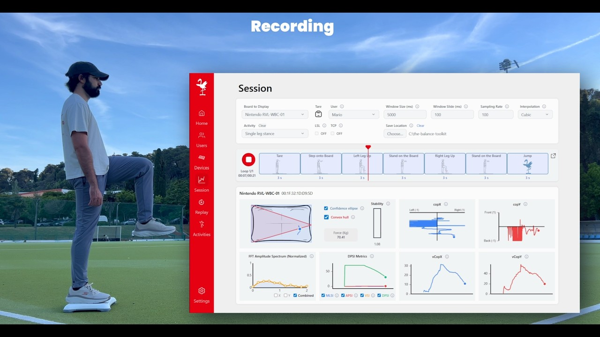
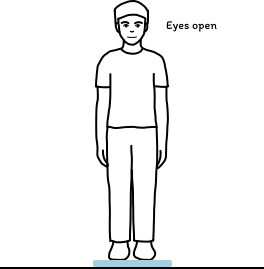
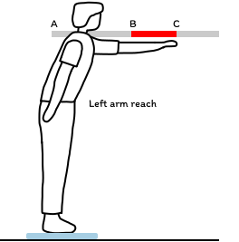
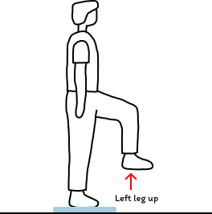
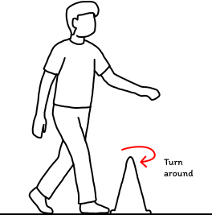
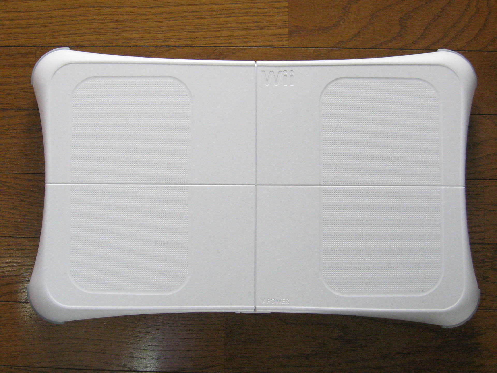
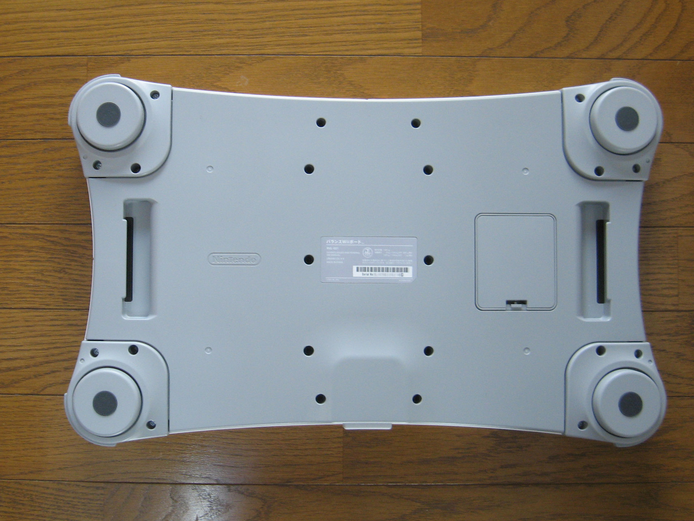
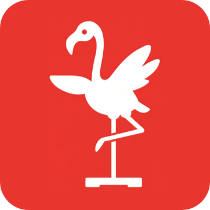

A balance lab from
a Wii Balance Board
Open-source software that pairs the board, measures sway and streams it to your games and analysis. From our CHI PLAY 2026 paper.
Move over the board, or drag on a phone, to shift the weight. The numbers use the toolkit’s own centre-of-pressure formula.

Watch it record a real trial
A single leg stance, from pairing to the live plots, in the full walkthrough on YouTube.
Play the walkthroughHow long is your trial?
rows
The board is read about 100 times a second, so every second of a trial adds about 100 rows to the session’s raw CSV, one per sample.
The session panel
00:00/02:08
Six activities, ready to run
-

3 steps20 s a loop2 loops1 board
Eyes open-close0:40
Quiet standing with eyes open, then closed
-

8 steps72 s a loop2 loops1 board
Functional Reach Test2:24
Reaching forward while keeping balance
-

6 steps64 s a loop2 loops1 board
Single leg stance2:08
Left leg up, then right, with rests between
-

6 steps64 s a loop2 loops1 board
Tandem stance2:08
Feet heel to toe, each foot in front in turn
-

6 steps72 s a loop2 loops1 board
Timed Up and Go2:24
Sit, stand, walk, turn, walk back, sit
-

4 steps12 s a loop2 loops2 boards
Squat0:24
Controlled weight shift across two boards
-

-

From box to stream
-
First, press SYNC on the board.
Scan from the Devices page and press the red button in the battery bay. The board appears with its battery level.
-
Then step off, tare, and step on.
Tare stores an offset for each of the four sensors, so an empty board reads zero.
-
Now record, or read it live.
Every sample lands in CSV and goes out over TCP and LSL. Python reads it in a few lines.
Scanning… press SYNC on the board
Offsets stored: TL 0.51, TR 0.42, BL 0.47, BR 0.38 kg
sock = socket.create_connection(("::1", 11223))
while True:
packet = sock.recv(40)
t, mac, tr, br, tl, bl, x, y = \
struct.unpack(">qQ6f", packet)
print(f"{tr+br+tl+bl:6.2f} kg {x:+.3f} {y:+.3f}") 71.94 kg +0.043 -0.018
71.97 kg +0.047 -0.021
72.02 kg +0.051 -0.019timestamp,top_right,bottom_right,top_left,bottom_left
00:00:00.000,19.10,17.20,18.40,16.90
00:00:00.010,19.30,17.10,18.20,16.80
00:00:00.020,19.60,16.90,18.00,16.90
00:00:00.030,19.80,16.70,17.90,17.20
00:00:00.040,19.70,16.80,18.10,17.40
00:00:00.050,19.40,17.10,18.30,17.30
00:00:00.060,19.00,17.40,18.50,17.10
00:00:00.070,18.80,17.60,18.60,16.90
00:00:00.080,18.90,17.50,18.40,16.70
00:00:00.090,19.20,17.20,18.20,16.80Raw rows
- Rows
- 10
- Mean load
- 71.98 kg
- Path length
- 0.0 mm
- Mean velocity
- 0 mm/s
- ML range
- 0.0 mm
- AP range
- 0.0 mm
What goes down the wire
Raw data goes to TCP port 11223 and processed results to 11224. LSL publishes two streams named after the-balance-toolkit.
TCP raw, 40 bytes a sample, big-endian
- timestampbytes 0–7, i64, µs
- mac_addressbytes 8–15, u64
- top_rightbytes 16–19, f32, kg
- bottom_rightbytes 20–23, f32, kg
- top_leftbytes 24–27, f32, kg
- bottom_leftbytes 28–31, f32, kg
- cop_xbytes 32–35, f32, −1 to +1
- cop_ybytes 36–39, f32, −1 to +1
LSL the-balance-toolkit_basic, 8 channels
- timestampµs
- mac_addressboard
- top_right, bottom_right, top_left, bottom_leftkg
- cop_x, cop_y−1 to +1
LSL the-balance-toolkit_complex, 9 channels
- timestampµs
- mac_addressboard
- v_cop_x, v_cop_ymm/s
- stability_indexmm
- dpsi_mlsi, dpsi_apsimm
- dpsi_vsifraction of body weight
- dpsi_overallpooled
What’s in the toolkit

We built The Balance Toolkit because balance research is expensive. Lab force plates cost more than most clinics, game studios and student projects can spend, while the Wii Balance Board is cheap, sturdy and already in many homes.
Before writing code we asked 26 balance experts, from physical therapists to HCI researchers in six regions, what gets in the way. Seventeen named cost. Of the eighteen who had used a Wii Balance Board, thirteen struggled just to pair it, and nine lost the Bluetooth connection during use.
So the toolkit starts there: pairing that works on Windows, macOS and Linux, one or two boards in a session, and the centre-of-pressure and stability metrics that clinicians already report, written to plain CSV.
We also make games, so every number goes out live over TCP and Lab Streaming Layer. A Unity scene or a Python notebook can react to a person’s sway while it happens.
It is all open source. Use it, change it, and tell us what you build.
The Balance Toolkit team
Empathic Computing Laboratory, Auckland Bioengineering Institute, University of Auckland
Using the toolkit in a paper? Copy the citation.
Copies the BibTeX entry below. The DOI will be added on publication.
@inproceedings{valente2026balancetoolkit,
title = {The Balance Toolkit: Democratizing Balance-Based Interaction
Through Open-Source Software for Repurposed Wii Balance Boards},
author = {Valente, Andreia and Kothari, Nidhi and Ahmed-Mahmoud, Hana
and Esteves, Augusto and Billinghurst, Mark},
booktitle = {Annual Symposium on Computer-Human Interaction in Play (CHI PLAY '26)},
year = {2026},
address = {York, UK},
publisher = {ACM}
}- Paper
- CHI PLAY ’26, York, UK
- Lab
- Empathic Computing Laboratory, University of Auckland